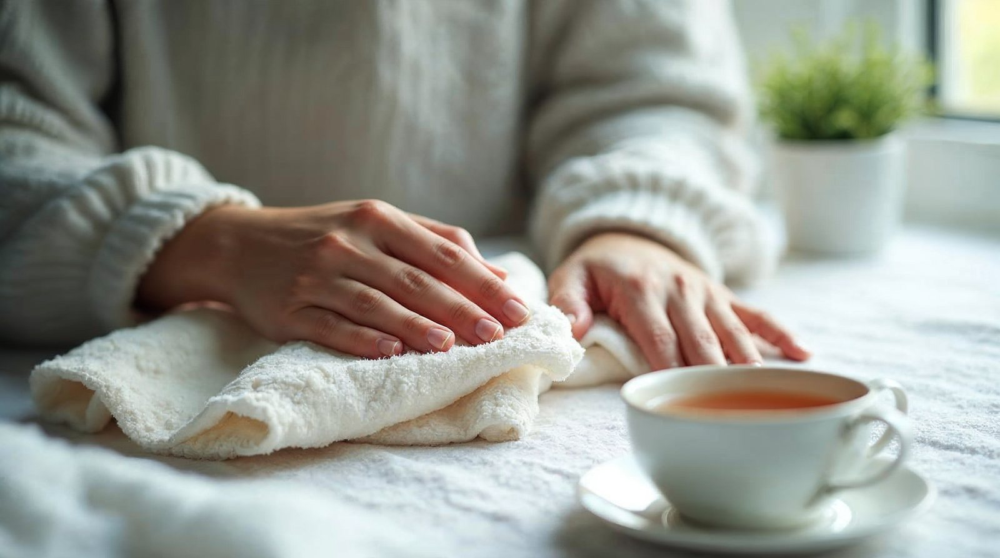
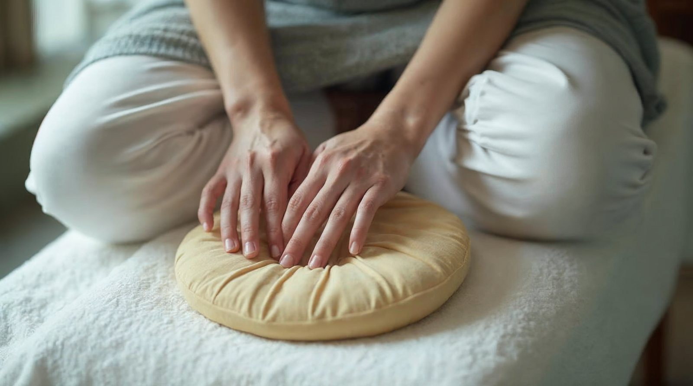
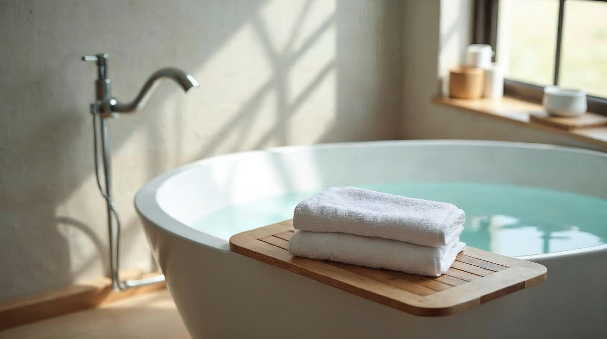

이종호 한의사 감수좋은꿈참사랑한의원 대표원장 (한의사 면허번호 19769)발행 2026-11-24 · 수정 2026-11-26
이 글의 차례
- 왜 이런 불편이 생길 수 있나요
- 왜 하필 쉬는 날 아플까요
- 주말 몸살과 감기 몸살은 다른 얘기예요
- 이런 한 주를 보내셨다면
- 먼저 이렇게 여쭙니다
- 스스로 한번 확인해 보세요
- 일상에서 먼저 해 볼 수 있는 것
- 주중에 긴장을 조금씩 나눠 풀어 보세요
- 평일에 몸이 보내는 신호를 알아차려 보세요
- 커피와 술은 이렇게 조절해 보세요
- 주말 잠은 이렇게 챙겨 보세요
- 주말 하루는 이렇게 보내 보세요
- 일요일 저녁이 유난히 무겁다면
- 스트레스 받지 마세요, 그런 말은 안 할게요
- 몇 달째 주말마다 반복된다면
- 휴가 앞뒤도 조금씩 나눠 주세요
- 하나만 부탁드릴게요
- 한의원에서 함께 살필 수 있는 경우
- 이렇게 기록해 오시면 상담이 쉬워집니다
- 이런 증상은 먼저 확인이 필요합니다
긴장을 주말에 한꺼번에 풀기보다 주중에 조금씩 나누어 푸는 것이 주말 몸살 기운을 줄이는 데 도움이 될 수 있습니다.
장승배기나 대방 쪽으로 출퇴근하는 직장인 가운데에도 평일에는 정신없이 버티다가 금요일 밤이면 머리가 아프고, 토요일엔 몸살처럼 누워 지내는 경우가 적지 않습니다. 쉬려고 하면 몸이 먼저 탈이 나는 것 같다는 말씀도 자주 듣습니다.
진료실에서 이런 말씀을 들으면 저는 먼저 "원래 그럴 수 있어요"라고 말씀드려요. 이상한 몸이라서가 아니라, 한 주 동안 그만큼 애쓰고 버텼다는 뜻인 경우가 많거든요. 몸이 게으른 게 아니에요.
그러니까 사실은 아픈 날이 주말인 게 문제가 아니라, 긴장이 한 주 내내 쉬지 않고 이어진다는 게 핵심이에요. 그래서 저는 주말을 어떻게 보낼지보다 평일을 어떻게 나눠 쓸지를 같이 이야기해요.
왜 이런 불편이 생길 수 있나요
- 평일 내내 높은 긴장이 이어지다 갑자기 풀리면 그동안 눌러 두었던 피로를 한꺼번에 느끼는 분이 있습니다.
- 주말에 커피를 갑자기 줄이면 두통이나 무기력을 느끼기도 합니다.
- 주말에 오래 자면 오히려 머리가 무겁고 몸이 늘어지는 분도 있습니다.
- 평일에 굳어 있던 목·어깨 긴장이 쉬는 날 통증으로 드러나기도 합니다.
왜 하필 쉬는 날 아플까요
우리 몸에는 위기 때 켜지는 신경이 있어요. 옛날에는 사자나 호랑이를 만났을 때 켜져서 심장을 빨리 뛰게 하고, 근육을 단단하게 만들고, 피곤한 것도 잠깐 잊게 해 주던 신경이에요.
요즘은 사자 대신 마감, 회의, 실적, 상사 전화가 그 역할을 해요. 문제는 이 신경이 월요일부터 금요일까지 거의 꺼지지 않고 켜져 있다는 거예요. 그동안은 피곤해도 버틸 수 있는 거죠.
그러다 금요일 저녁, 드디어 사자가 사라지면 신경이 한꺼번에 꺼져요. 그때 그동안 미뤄 두었던 피로와 뭉침이 한꺼번에 밀려와요. 그래서 쉬려고 하면 아프다는 말이 나오는 거예요.
같은 이유로 휴가 첫날이나 큰 프로젝트가 끝난 다음 날 앓아눕는 분들도 많아요. 몸이 이제 아파도 된다고 판단한 순간에 아픈 거예요.
이게 재밌는 게 뭐냐 하면요, 몸이 나름대로 때를 골라서 아픈 거예요. 바쁜 평일엔 참아 주다가 쉬는 날에 청구서를 내미는 거죠. 그러니 청구서가 한꺼번에 오지 않도록, 평일에 조금씩 나눠 내는 방법을 찾자는 거예요.
주말 몸살과 감기 몸살은 다른 얘기예요
두 개가 다른 얘기거든요. 감기 몸살은 열이 나거나 목이 붓고, 기침이나 콧물이 따라오는 경우가 많아요. 주말이 지나도 며칠 더 이어지는 경우도 흔하고요.
반대로 긴장이 풀리며 오는 주말 몸살은 열이 없고, 머리가 무겁고 온몸이 두들겨 맞은 듯 뻐근한 게 중심이에요. 그리고 이상하게도 월요일 아침이 되면 언제 그랬냐는 듯 가라앉는 경우가 많아요.
체온을 한번 재 보시고, 월요일에 어떻게 달라지는지 지켜보시면 어느 쪽인지 가늠하는 데 도움이 돼요. 열이 나거나 기침이 심하다면 감기나 다른 원인을 먼저 확인받아야 하고요.
이런 한 주를 보내셨다면
예를 들어 월요일부터 야근이 이어지고 점심은 책상에서 먹으며, 커피를 하루 서너 잔씩 마신 한 주였다면 토요일에 몸이 무거운 게 당연할 수 있어요. 버티는 데 쓸 힘을 다 쓴 거거든요.
주중에는 잠을 대여섯 시간 자다가 주말에 열 시간 넘게 몰아 자는 경우도 많아요. 그러면 일요일 밤엔 잠이 안 오고, 월요일 아침이 또 힘들어지는 고리가 생겨요.
금요일 밤 회식에서 술을 많이 마시고 늦게 자는 것도 토요일 몸살 기운을 더하는 경우가 많아요. 긴장이 풀리는 날 몸에 또 하나의 짐을 얹는 셈이죠.
평일엔 아이 등원과 출근을 동시에 챙기고, 주말엔 밀린 집안일과 가족 일정을 몰아서 하는 분들도 비슷해요. 쉬는 날이 사실은 쉬는 날이 아닌 거예요. 그럴수록 하루 중 잠깐이라도 나만 쉬는 시간을 따로 떼어 두는 게 필요해요.
먼저 이렇게 여쭙니다
- 주말에 아픈 곳은 머리, 어깨, 온몸 가운데 어디인가요?
- 평일에는 몇 시에 자고 일어나며, 주말에는 얼마나 더 주무시나요?
- 평일에 커피나 에너지 음료를 얼마나 드시고, 주말에는 줄이시나요?
- 한 주 동안 긴장을 푸는 시간이 따로 있나요?
스스로 한번 확인해 보세요
- 금요일 밤이나 토요일 아침에 두통이 시작되나요?
- 열은 없는데 온몸이 뻐근하고 무겁나요?
- 주말에 평일보다 두세 시간 이상 더 주무시나요?
- 주말에는 커피를 거의 안 드시나요?
- 월요일이 되면 몸살 기운이 사라지나요?
- 평일에 이를 꽉 물거나 어깨에 힘이 들어가 있다는 말을 들은 적이 있나요?
몇 가지가 겹친다면 긴장이 풀리며 오는 몸살일 가능성을 같이 생각해 볼 수 있어요. 해당하는 것에 표시만 해 오셔도 진료실에서 이야기가 빨라져요.

일상에서 먼저 해 볼 수 있는 것
- 주말에도 일어나는 시각을 평일과 크게 다르지 않게 두기
- 주말에 커피를 갑자기 끊기보다 평일보다 조금만 줄이기
- 수요일 저녁처럼 주중에 짧게라도 쉬는 시간을 정해 두기
- 금요일 밤에는 과음 대신 따뜻한 물로 씻고 일찍 눕기
주중에 긴장을 조금씩 나눠 풀어 보세요
긴장을 주말에 몰아서 푸는 건, 한 달 치 빨래를 주말에 한꺼번에 하는 것과 비슷해요. 하루에 조금씩 돌리면 별일 아닌데, 몰아서 하면 그날 하루가 통째로 힘들어지잖아요.
점심 먹고 5분이라도 건물 밖을 천천히 걸어 보세요. 퇴근길에 한 정거장 먼저 내려 걷는 것도 좋아요. 세게 운동하라는 게 아니에요. 약하게라도 매일 하는 게 몸에는 훨씬 잘 맞는 경우가 많거든요.
저도 일이 몰리는 시기엔 몸이 굳는 게 느껴져요. 그럴 때 일부러 천천히, 오래 걷는 시간을 만들어요. 빨리 걷는 것보다 느리게 오래 걷는 게 긴장을 내리는 데는 더 잘 맞더라고요.
업무 중간에는 어깨를 한번 으쓱 올렸다가 툭 떨어뜨리고, 숨을 천천히 길게 내쉬어 보세요. 몇 초면 되는 일인데, 하루에 몇 번 해 주면 켜져 있던 긴장을 조금씩 내려 주는 데 도움이 될 수 있어요.
평일에 몸이 보내는 신호를 알아차려 보세요
긴장은 생각보다 몸 곳곳에 티가 나요. 일하다 보면 어깨가 귀 쪽으로 올라가 있거나, 이를 꽉 물고 있거나, 숨을 얕게 쉬고 있는 경우가 많거든요. 본인은 잘 모르시는 경우가 대부분이에요.
점심을 급하게 먹고 나면 속이 더부룩하거나, 오후만 되면 눈이 뻑뻑하고 뒷목이 당기는 것도 흔한 신호예요. 이런 신호가 평일 내내 쌓였다가 주말에 한꺼번에 터지는 거예요.
휴대폰 알람을 오전과 오후에 하나씩 맞춰 두고, 울릴 때마다 어깨와 턱에 힘이 들어가 있는지만 확인해 보세요. 알아차리는 것만으로도 힘을 빼는 첫걸음이 되거든요.
커피와 술은 이렇게 조절해 보세요
평일에 커피로 버티다가 주말에 갑자기 끊으면 머리가 지끈거리는 분들이 많아요. 몸이 평일의 커피에 익숙해져 있다가 갑자기 빠지니까 그런 거예요. 그래서 주말에도 한 잔 정도는 비슷한 시간에 드시는 게 오히려 편할 수 있어요.
줄이고 싶다면 평일부터 한 잔씩 천천히 줄이는 게 좋아요. 오후 늦게 마시는 커피를 먼저 빼면 밤잠에도 도움이 되는 경우가 많고요.
술은 긴장을 푸는 것 같아도 잠을 얕게 만들고, 다음 날 몸을 더 무겁게 하는 경우가 많아요. 금요일 밤 술자리가 잦다면 그날만이라도 일찍 마무리해 보세요. 한약을 드시는 동안에는 술을 드시지 않는 것이 좋아요.
에너지 음료도 커피와 비슷해요. 오후에 한 캔씩 마시는 습관이 있다면, 그 시간에 물 한 잔과 짧은 산책으로 바꿔 보는 것부터 시작해 보세요.
주말 잠은 이렇게 챙겨 보세요
주말에 몰아 자고 싶은 마음, 충분히 이해해요. 그런데 평일보다 서너 시간 늦게 일어나면 몸의 시계가 뒤로 밀리면서 머리가 더 무겁고, 일요일 밤엔 잠이 안 오는 경우가 많아요.
일어나는 시각은 평일과 한 시간 안쪽으로 맞춰 보세요. 모자란 잠은 오후 이른 시간에 짧게 낮잠으로 채우는 게 몸의 리듬을 덜 흔들어요. 일어나서 커튼을 걷고 햇빛을 보는 것도 도움이 될 수 있어요.
잠이 보약이라는 말이 있잖아요. 그런데 보약도 한꺼번에 몰아 먹는 것보다 매일 조금씩 챙기는 게 좋아요. 주말에 몰아 자기보다, 평일 밤에 삼십 분이라도 일찍 눕는 날을 하루 이틀 만들어 보세요.
주말 하루는 이렇게 보내 보세요
토요일 아침에 눈을 뜨면 누워 있고 싶은 마음이 크시죠. 그래도 커튼을 걷고, 물 한 잔 마시고, 동네를 천천히 십 분만 걸어 보세요. 몸이 아직 움직이고 있다는 신호를 주면 하루가 덜 처지는 경우가 많아요.
밀린 집안일을 토요일 하루에 다 해치우려는 것도 조심해 주세요. 평일의 긴장이 집안일로 모양만 바뀌어 이어지는 거거든요. 토요일과 일요일에 나눠서, 하나씩 천천히 하셔도 충분해요.
하고 싶은 걸 참으실 필요는 없어요. 친구를 만나도 되고, 좋아하는 취미를 하셔도 돼요. 다만 밤늦게까지 몰아서 하기보다 평소 잠자는 시각을 크게 넘기지 않는 정도로만 지켜 주시면 돼요.
일요일 저녁이 유난히 무겁다면
토요일엔 몸살 기운이 있다가 일요일 저녁이 되면 이번엔 마음이 무거워진다는 분들도 많아요. 내일 일이 벌써 머릿속에 줄을 서는 거죠. 그 긴장이 다시 몸을 굳게 만들고요.
이럴 땐 일요일 저녁에 다음 주 할 일을 종이에 딱 세 줄만 적어 보세요. 머릿속에서 계속 돌던 걸 밖으로 꺼내 두면 조금 가벼워지는 분들이 있어요. 적고 나서는 덮어 두고, 따뜻한 물로 씻고 평소 시각에 누우시면 돼요.
스트레스 받지 마세요, 그런 말은 안 할게요
"스트레스 받지 마세요"라는 말, 지키기 어렵잖아요. 일을 그만둘 수도, 책임을 내려놓을 수도 없으니까요. 그래서 저는 그런 말은 안 해요. 대신 버틸 수 있게 도와드리는 게 제 몫이라고 생각해요.
평일에 긴장하는 것도 사실 그만큼 책임감이 있다는 뜻이에요. 그 성향이 지금까지 일을 해 오게 한 힘이기도 하고요. 그 힘은 그대로 두고, 몸이 지치지 않게 같이 챙기는 거예요.
몇 달째 주말마다 반복된다면
한두 번이면 바쁜 한 주의 흔적일 수 있어요. 그런데 몇 달째 주말마다 같은 일이 반복된다면, 한 주의 긴장이 몸이 감당할 수 있는 선을 자주 넘고 있다는 신호로 볼 수 있어요.
이럴 땐 주말 몸살만 볼 게 아니라 평일 잠이 얼마나 깊은지, 식사는 제때 하시는지, 마음이 얼마나 지쳐 있는지를 같이 봐야 해요. 쉬는 날에도 일 생각이 멈추지 않거나 이유 없이 불안하다면 그 이야기도 편하게 꺼내 주세요.
마음이 많이 지쳐 있다면 정신건강의학과 진료나 상담을 함께 받는 게 도움이 될 수 있어요. 필요하면 제가 같이 안내해 드릴게요. 한 곳에서 다 해결하려고 하지 않으셔도 돼요.
휴가 앞뒤도 조금씩 나눠 주세요
긴 휴가 첫날 앓아누웠다는 이야기, 정말 자주 들어요. 휴가 직전까지 일을 몰아서 끝내고 바로 떠나면 긴장이 한꺼번에 풀리기 쉽거든요.
휴가 전 며칠은 일을 조금씩 정리하고 잠을 먼저 챙겨 보세요. 휴가 마지막 날도 하루쯤은 집에서 쉬며 평소 리듬으로 돌아오는 날로 두면, 복귀 첫날이 덜 힘들 수 있어요.
하나만 부탁드릴게요
숙제를 많이 드리면 그것도 또 하나의 긴장이 되더라고요. 그래서 딱 하나만 부탁드려요. 주말에도 일어나는 시각을 평일과 비슷하게 맞춰 주세요. 딴 건 편하게 하셔도 돼요. 몸의 긴장을 살피는 건 제가 맡을게요. 하루 이틀 못 지키셔도 괜찮아요. 다시 하시면 되거든요.

한의원에서 함께 살필 수 있는 경우
- 주말마다 두통이나 몸살 기운이 반복되는 경우 평일의 긴장과 잠을 함께 살핍니다.
- 목·어깨가 굳어 있고 숨이 얕은 경우 몸의 긴장 정도를 함께 살핍니다.
- 주말에도 쉬지 못하고 걱정이 이어지는 경우 마음 상태와 생활 리듬을 함께 여쭙니다.
좋은꿈참사랑한의원에서는 모든 분께 맥부터 짚으며 긴장과 잠, 식사처럼 몸으로 느끼는 변화를 여쭙고, 필요하면 혀(설진)도 살핍니다. 침이나 한약 상담 등 상태에 맞는 방법을 정하며, 정신건강의학과 진료나 상담이 필요하다고 판단되면 함께 안내합니다.
처음 오시면 맥을 먼저 짚고, 한 주를 어떻게 보내시는지부터 여쭤봐요. 몇 시에 출근해서 몇 시에 들어오시는지, 점심은 어떻게 드시는지, 주말엔 무엇을 하시는지요. 그 이야기 안에 답이 들어 있는 경우가 많거든요.
진료실에서는 목과 어깨가 얼마나 굳어 있는지, 숨을 쉴 때 가슴이 얼마나 움직이는지도 같이 봐요. 긴장은 마음에만 있는 게 아니라 몸 곳곳에 남거든요. 아픈 곳만이 아니라 몸 전체를 보려는 거예요.
지금 드시는 약이 있다면 꼭 알려 주세요. 한약은 드시는 약을 먼저 확인한 뒤 정하고, 처방받은 약은 처방한 의사와 상의 없이 줄이거나 끊지 않습니다. 치료를 시작하면 보통 한 달 정도 지내 보면서 주말이 어떻게 달라지는지 같이 보고 다음을 정해요.

이렇게 기록해 오시면 상담이 쉬워집니다
- 주말에 아픈 부위와 시작되는 시각
- 평일과 주말의 잠드는 시각, 일어나는 시각
- 평일과 주말의 커피·술 섭취량
- 주말에 아픈 정도(0~10점)와 평일이 되면 어떻게 달라지는지
휴대폰 메모에 "금 야근, 커피 4잔 / 토 10시 기상, 두통 6점 / 월 가라앉음"처럼 한 줄씩만 남겨 두셔도 충분해요. 2~3주만 모아도 어떤 한 주를 보냈을 때 주말이 힘든지 모양이 보이기 시작하거든요.
이런 증상은 먼저 확인이 필요합니다
- 열이 나거나 기침이 심한 경우, 또는 갑자기 아주 심한 두통이 온 경우
- 스스로를 해칠 생각이 들면 ☎ 109로 바로 연락하세요.
이런 신호가 있으면 한의원보다 가까운 병원이나 응급실을 먼저 찾으세요.

여쭙는 것
- 주말에 아픈 곳은 머리, 어깨, 온몸 가운데 어디인가요?
- 평일에는 몇 시에 자고 일어나며, 주말에는 얼마나 더 주무시나요?
- 평일에 커피나 에너지 음료를 얼마나 드시고, 주말에는 줄이시나요?
생활에서 해 볼 것
- 주말에도 일어나는 시각을 평일과 크게 다르지 않게 두기
- 주말에 커피를 갑자기 끊기보다 평일보다 조금만 줄이기
- 수요일 저녁처럼 주중에 짧게라도 쉬는 시간을 정해 두기
한의원에서 함께 살필 것
- 주말마다 두통이나 몸살 기운이 반복되는 경우 평일의 긴장과 잠을 함께 살핍니다.
- 목·어깨가 굳어 있고 숨이 얕은 경우 몸의 긴장 정도를 함께 살핍니다.
- 주말에도 쉬지 못하고 걱정이 이어지는 경우 마음 상태와 생활 리듬을 함께 여쭙니다.
먼저 확인이 필요한 신호
- 열이 나거나 기침이 심한 경우, 또는 갑자기 아주 심한 두통이 온 경우
- 스스로를 해칠 생각이 들면 109로 바로 연락하세요.
한눈에 보는 표
| 구분 | 핵심 |
|---|---|
| 여쭙는 것 | 주말에 아픈 곳은 머리, 어깨, 온몸 가운데 어디인가요? 평일에는 몇 시에 자고 일어나며, 주말에는 얼마나 더 주무시나요? |
| 생활에서 해 볼 것 | 주말에도 일어나는 시각을 평일과 크게 다르지 않게 두기 주말에 커피를 갑자기 끊기보다 평일보다 조금만 줄이기 |
| 한의원에서 함께 살필 것 | 주말마다 두통이나 몸살 기운이 반복되는 경우 평일의 긴장과 잠을 함께 살핍니다. 목·어깨가 굳어 있고 숨이 얕은 경우 몸의 긴장 정도를 함께 살핍니다. |
| 먼저 확인이 필요한 신호 | 열이 나거나 기침이 심한 경우, 또는 갑자기 아주 심한 두통이 온 경우 스스로를 해칠 생각이 들면 109로 바로 연락하세요. |
자주 묻는 질문
주말에 푹 자면 나아지지 않나요?
오래 자고 일어나도 머리가 무겁다는 분이 있습니다. 주말에도 일어나는 시각을 크게 바꾸지 않으면 몸의 리듬이 덜 흔들릴 수 있어, 생활에 맞게 함께 조정해 봅니다.
휴가를 가면 더 아플까 봐 걱정돼요.
긴장이 한꺼번에 풀리는 날을 줄이도록, 휴가 전 한 주 동안 일정과 잠을 조금씩 조정하는 방법을 함께 정리합니다.
주말에 운동을 몰아서 하면 도움이 될까요?
평소 움직임이 적은 상태에서 주말에 갑자기 많이 하면 오히려 몸이 더 지칠 수 있습니다. 주중에 짧게 걷는 시간을 두고 주말에는 가볍게 이어가는 편을 권합니다.
진료 시간은 어떻게 되나요?
좋은꿈참사랑한의원은 평일 09:30~20:00(점심 13:00~14:00), 토·일·공휴일 09:30~15:00에 진료합니다.
좋은꿈참사랑한의원은 재진 때 지난번 이야기부터 이어서 여쭙니다. 진료시간과 예약은 오시는 길에서 확인하세요.
어디서 상담받을 수 있나요?
좋은꿈참사랑한의원은 서울 동작구 만양로2길 2 신성빌딩 3층·5층(서울 동작구 상도동, 7호선 상도역 3번 출구 근처)에 있습니다. 한의사 3명(이종호 대표원장, 조영기 수석진료원장, 정원영 진료원장)이 진료합니다. 진료시간은 평일 09:30~20:00(점심 13:00~14:00), 토·일·공휴일 09:30~15:00이며, 방문 전 전화로 확인을 권합니다. 예약은 네이버 예약, 카카오톡 상담, 전화 02-815-7510로 받습니다.
이 글은 일반적인 건강 정보이며 개인의 진단이나 치료를 대신하지 않습니다. 증상이 있거나 복용 중인 약이 있다면 진료를 통해 확인하세요. 치료 효과는 개인마다 다를 수 있습니다.
작성 기준: 일반적으로 알려져 있는 건강 정보를 참고해 정리했습니다(대표원장 감수). 증상 기록은 1~2주 동안 하루 1회, 비슷한 시간에 적어 오시면 지난 상태와 비교하기 쉽습니다.